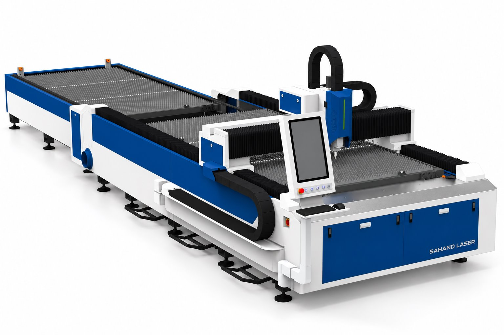

CUT-3015-4
نام و هویت محصول از فهرست ثبتشدهٔ سهند لیزر نقل شده است. اطلاعات سازنده، گزینههای خانواده و تصویر مرجع به معنی تأیید موجودی یا پیکربندی نصبشده نیست.


Exterior compared with supplied 3015 exchange-table CAD: both beds, front control pedestal, blue panels, bellows, gantry and cable chain match. Render does not establish hidden assemblies or manufacturer suffix.
سند تطبیق
اطلاعات ثبتشده و دامنهٔ آن
| هویت خانواده در مستند ارسالی | این مدل در خانوادهی برش ورق سهند فهرست شده است؛ مشخصات این مرجع به پیکربندی نصبشدهی همین مدل تعمیم داده نمیشود دامنهٔ ثبت: user_supplied_family_reference_not_installed_identity · منبع |
|---|---|
| ساختار میز | دو میز دامنهٔ ثبت: user_requested_taxonomy · منبع |
| پیکربندی کابین در نام مدل | بدون کابین در نام مدل دامنهٔ ثبت: user_requested_taxonomy · منبع |
| گروه کاربرد محصول | ورقبر دامنهٔ ثبت: user_requested_taxonomy · منبع |